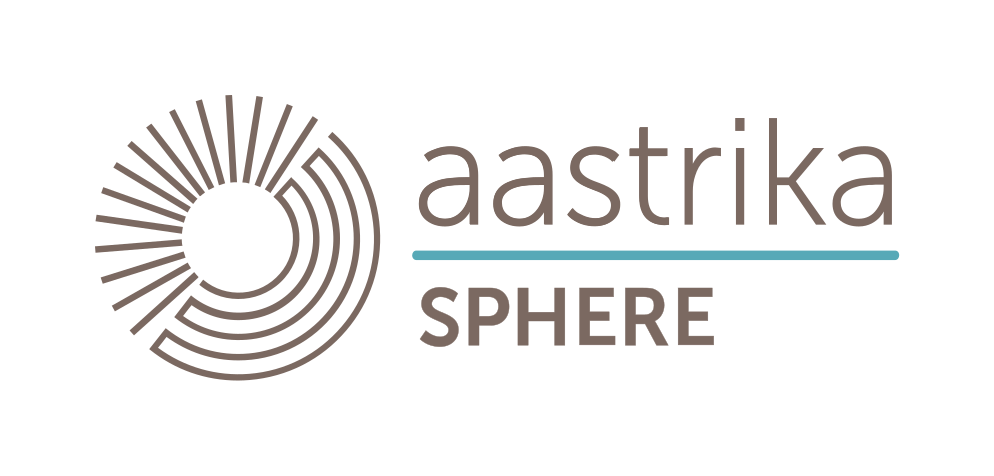

<mat-toolbar *ngIf="showPublicNavbar" [color]="navBar?.color" [ngStyle]="navBar?.styles">
  <a name="application-logo" class="padding-remove-small application-logo" routerLink="." i18n-matTooltip
    matTooltip="Home">
    
  </a>
  <ng-container [ngTemplateOutlet]="navbarSide" [ngTemplateOutletContext]="{ item: item }"
    *ngFor="let item of primaryNavbarConfig?.mediumScreen?.right">
  </ng-container>
  <span class="spacer"></span>
  <div class="flex justify-center flex-col login-btn">
    <button *ngIf="(isXSmall$ | async) === true && (this.configSvc.userProfile === null)" name="login_client_button"
      [ngStyle]="{'background-color': 'inherit',  'width': '90px', 'border' :'1px solid #3f51b5', 'border-radius': '20px', 'color' : '#3f51b5', 'font-size': 'medium'}"
      mat-raised-button i18n="login: client" (click)="login('S')" class="login-btn-xs">
      Log in
    </button>
  </div>
</mat-toolbar>
<ng-template #navbarSide let-item="item">
  <ng-container *ngIf="item.type === 'widgetButton'">
    <ng-container *ngIf="item.config.widgetSubType === 'actionButtonCatalog'" [wsExploreResolverWidget]="item.config">
    </ng-container>
  </ng-container>
</ng-template>